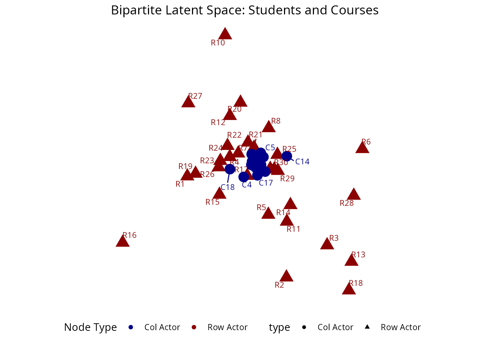
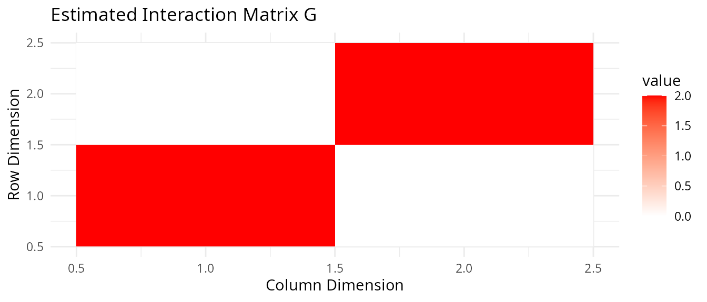
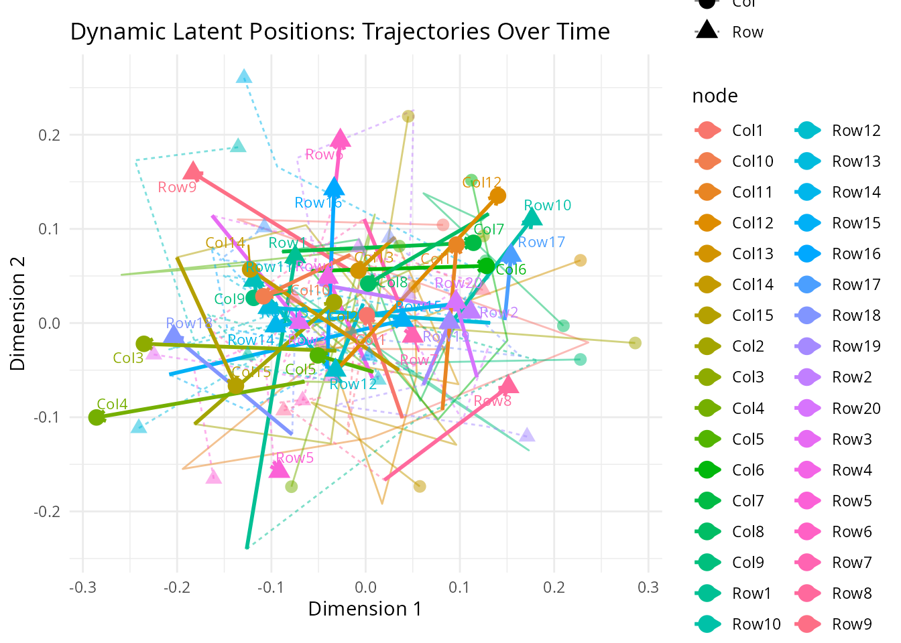
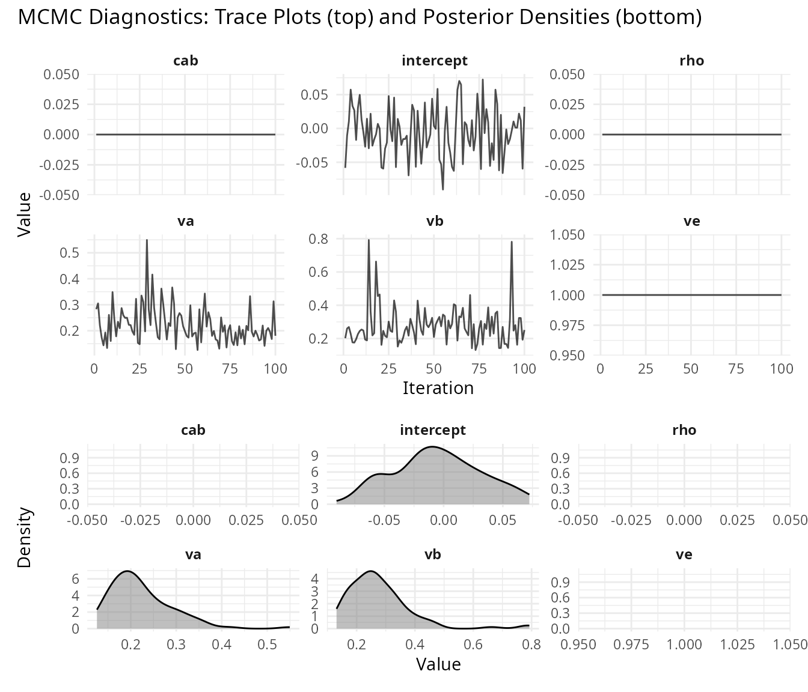
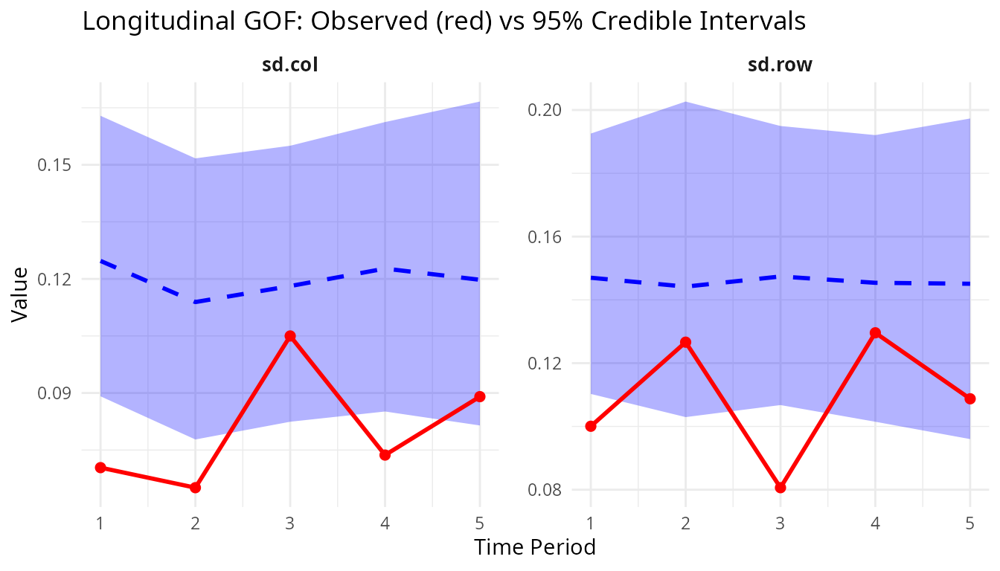
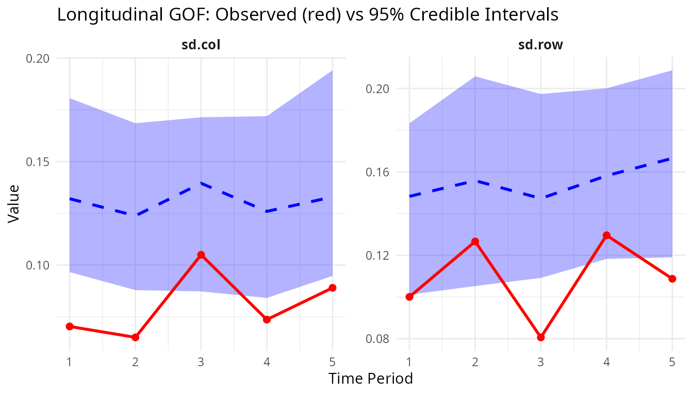
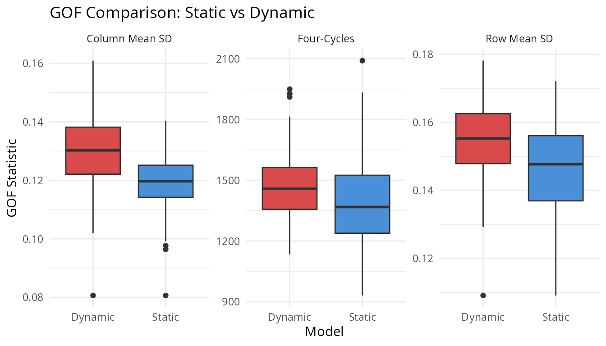
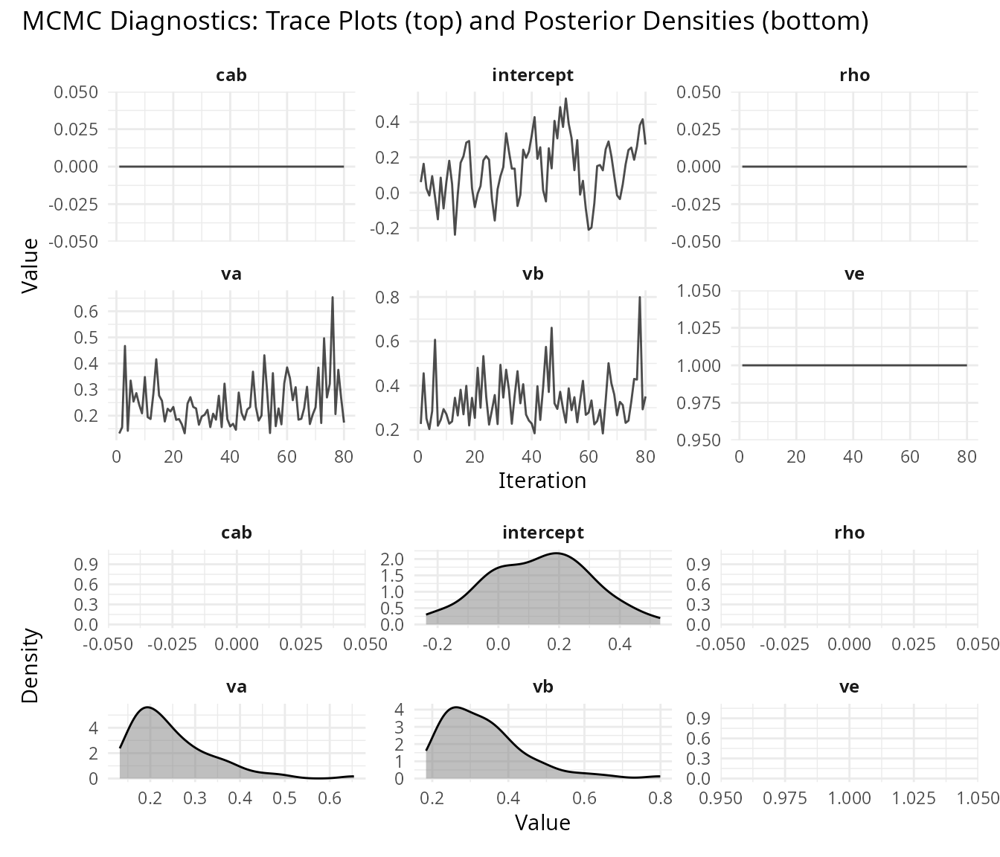

Introduction
Not all networks are created equal. Many real-world networks are bipartite, meaning they have two distinct types of nodes, and ties only form between types, never within them. Students enroll in courses. Countries sign treaties. Legislators join committees. Users purchase products. In each case, the adjacency matrix is rectangular rather than square, and the row and column nodes play fundamentally different roles.
The lame package supports bipartite networks through
both ame() (cross-sectional) and lame()
(longitudinal). The key difference from the unipartite case is that the
model uses separate latent spaces for the two node types, connected by
an interaction matrix
that captures how row-node and column-node characteristics relate to
each other.
The Bipartite AME Model
In a bipartite network, the probability of a tie between row node and column node is modeled as:
The additive effects work just as in the unipartite case: captures how “active” row node is (e.g., a student who takes many courses), and captures how “popular” column node is (e.g., a course with high enrollment). But the multiplicative term is different. Instead of with shared latent dimensions, the row and column nodes live in potentially different-dimensional latent spaces ( and ), and the interaction matrix maps between them. This is more flexible, letting the model discover that, say, two dimensions of student preferences map onto three dimensions of course characteristics.
A few things drop away in the bipartite setting. There is no dyadic correlation parameter , because ties are inherently directional from row to column nodes (you can’t have a reciprocal tie in a student–course network). The additive effects and also have independent variances rather than a joint covariance, since they describe fundamentally different types of actors.
Cross-Sectional Analysis with ame()
Simulating Data
To illustrate the workflow, we simulate a bipartite network of 30 students and 20 courses. Each student has a 2-dimensional latent position that captures their academic preferences, and each course has a 2-dimensional latent position that captures what kind of student it attracts. The interaction matrix determines how these latent dimensions combine to predict enrollment.
# Simulate a student-course enrollment network
n_students <- 30
n_courses <- 20
# True latent positions (unobserved in practice)
U_true <- matrix(rnorm(n_students * 2), n_students, 2)
V_true <- matrix(rnorm(n_courses * 2), n_courses, 2)
# Interaction matrix: dimension 1 has positive affinity,
# dimension 2 has negative (students high on dim 2 avoid courses high on dim 2)
G_true <- matrix(c(1, 0.5, 0.5, -1), 2, 2)
# Generate enrollment probabilities and binary outcomes
eta <- U_true %*% G_true %*% t(V_true)
prob <- plogis(eta)
Y_bipartite <- matrix(rbinom(n_students * n_courses, 1, prob),
n_students, n_courses)
rownames(Y_bipartite) <- paste0("Student", 1:n_students)
colnames(Y_bipartite) <- paste0("Course", 1:n_courses)
cat("Network dimensions:", dim(Y_bipartite), "\n")
#> Network dimensions: 30 20
cat("Enrollment rate:", round(mean(Y_bipartite), 2), "\n")
#> Enrollment rate: 0.54Fitting the Model
Fitting a bipartite model requires setting
mode = "bipartite" and specifying the latent dimensions for
each node type separately via R_row and
R_col.
# Note: burn/nscan are kept small here for fast vignette building.
# For real analyses, use burn >= 1000 and nscan >= 5000.
fit_cross <- ame(
Y = Y_bipartite,
mode = "bipartite",
R_row = 2, # latent dimensions for students
R_col = 2, # latent dimensions for courses
family = "binary",
burn = 100,
nscan = 500,
odens = 5,
print = FALSE
)
summary(fit_cross)
#>
#> === AME Model Summary ===
#>
#> Call:
#> [1] "Y ~ a[i] + b[j], family = 'binary'"
#>
#> Regression coefficients:
#> ------------------------
#> Estimate StdError z_value p_value CI_lower CI_upper
#> beta0 0.136 0.167 0.815 0.415 -0.192 0.464
#> ---
#> Signif. codes: 0 '***' 0.001 '**' 0.01 '*' 0.05 '.' 0.1 ' ' 1
#>
#> Variance components:
#> -------------------
#> Estimate StdError
#> va 0.248 0.093
#> cab 0.000 0.000
#> vb 0.334 0.112
#> ve 1.000 0.000
#> rho 0.000 0.000
#> (va = sender, cab = sender-receiver covariance, vb = receiver,
#> rho = dyadic correlation, ve = residual variance)
#> Note: bipartite model (rho fixed to 0, cab fixed to 0)The output includes posterior means for the student latent positions
(U), course latent positions (V), and the
interaction matrix (G), along with additive effects:
APM for student activity levels and BPM for
course popularity.
Visualizing the Latent Space
The uv_plot function with layout = "biplot"
places both row and column nodes in the same latent space, making it
easy to see which students cluster near which courses. Students and
courses that appear close together in this plot have a higher predicted
probability of a tie.
uv_plot(fit_cross, layout = "biplot") +
ggtitle("Bipartite Latent Space: Students and Courses")
#> Warning: ggrepel: 16 unlabeled data points (too many overlaps). Consider
#> increasing max.overlaps
The interaction matrix tells us how the latent dimensions relate to each other. Positive entries mean that students and courses that score similarly on a dimension are more likely to be connected; negative entries mean the opposite.
G_melt <- melt(fit_cross$G)
ggplot(G_melt, aes(x = Var2, y = Var1, fill = value)) +
geom_tile() +
scale_fill_gradient2(low = "blue", mid = "white", high = "red") +
labs(title = "Estimated Interaction Matrix G",
x = "Column Dimension", y = "Row Dimension") +
theme_minimal()
Longitudinal Analysis with lame()
When bipartite networks are observed over multiple time periods (say,
student enrollments across semesters, or country–treaty memberships
across decades), lame() lets you pool information across
time while optionally allowing the latent structure to evolve.
Simulating Longitudinal Data
We simulate a panel of user–item interaction networks over 5 periods. The underlying latent structure is held fixed (for now), with small random shocks to the overall baseline at each period.
n_periods <- 5
n_users <- 20
n_items <- 15
U_long <- matrix(rnorm(n_users * 2), n_users, 2)
V_long <- matrix(rnorm(n_items * 2), n_items, 2)
G_long <- matrix(c(1, 0.3, 0.3, -0.8), 2, 2)
Y_list <- list()
for(t in 1:n_periods) {
eta_t <- U_long %*% G_long %*% t(V_long) + rnorm(1, 0, 0.2)
prob_t <- plogis(eta_t)
Y_list[[t]] <- matrix(rbinom(n_users * n_items, 1, prob_t),
n_users, n_items)
rownames(Y_list[[t]]) <- paste0("User", 1:n_users)
colnames(Y_list[[t]]) <- paste0("Item", 1:n_items)
}
names(Y_list) <- paste0("T", 1:n_periods)
cat("Time periods:", length(Y_list), "\n")
#> Time periods: 5
cat("Dimensions per period:", dim(Y_list[[1]]), "\n")
#> Dimensions per period: 20 15
cat("Average density:", round(mean(sapply(Y_list, mean)), 2), "\n")
#> Average density: 0.51Static Model
The simplest longitudinal model assumes that the latent positions and additive effects are constant over time. This pools all time periods together to get a single estimate of each actor’s latent position, useful when you believe the underlying structure is stable and you just want more data to estimate it precisely.
# Note: iterations are kept small for vignette speed; use burn >= 1000
# and nscan >= 5000 for real analyses.
fit_static <- lame(
Y = Y_list,
mode = "bipartite",
R_row = 2,
R_col = 2,
family = "binary",
dynamic_uv = FALSE,
dynamic_ab = FALSE,
burn = 100,
nscan = 500,
odens = 5,
print = FALSE,
plot = FALSE
)
summary(fit_static)
#>
#> === Longitudinal AME Model Summary ===
#>
#> Call:
#> NULL
#>
#> Time periods: 5
#> Family: binary
#> Mode: bipartite
#>
#> Regression coefficients:
#> ------------------------
#> Estimate StdError z_value p_value CI_lower CI_upper
#> intercept 0.059 0.172 0.344 0.731 -0.278 0.396
#> ---
#> Signif. codes: 0 '***' 0.001 '**' 0.01 '*' 0.05 '.' 0.1 ' ' 1
#>
#> Variance components:
#> -------------------
#> Estimate StdError
#> va 0.231 0.084
#> cab 0.000 0.000
#> vb 0.270 0.094
#> rho 0.000 0.000
#> ve 1.000 0.000
#> (va = sender, cab = sender-receiver covariance, vb = receiver,
#> rho = dyadic correlation, ve = residual variance)Dynamic Model
When you suspect the latent structure changes over time (users’ tastes shift, items gain or lose popularity), the dynamic model lets the latent positions and additive effects drift via AR(1) processes. A high autoregressive parameter ( close to 1) means slow, gradual change; a low one means the structure is more volatile from period to period.
# Same reduced iterations as above for vignette speed.
fit_dynamic <- lame(
Y = Y_list,
mode = "bipartite",
R_row = 2,
R_col = 2,
family = "binary",
dynamic_uv = TRUE,
dynamic_ab = TRUE,
burn = 100,
nscan = 500,
odens = 5,
print = FALSE,
plot = FALSE
)
summary(fit_dynamic)
#>
#> === Longitudinal AME Model Summary ===
#>
#> Call:
#> NULL
#>
#> Time periods: 5
#> Family: binary
#> Mode: bipartite
#> Dynamic latent positions: enabled (rho_uv = 0.391 )
#> Dynamic additive effects: enabled (rho_ab = 0.258 )
#>
#> Regression coefficients:
#> ------------------------
#> Estimate StdError z_value p_value CI_lower CI_upper
#> intercept -0.005 0.037 -0.146 0.884 -0.077 0.066
#> ---
#> Signif. codes: 0 '***' 0.001 '**' 0.01 '*' 0.05 '.' 0.1 ' ' 1
#>
#> Variance components:
#> -------------------
#> Estimate StdError
#> va 0.223 0.070
#> cab 0.000 0.000
#> vb 0.278 0.114
#> rho 0.000 0.000
#> ve 1.000 0.000
#> (va = sender, cab = sender-receiver covariance, vb = receiver,
#> rho = dyadic correlation, ve = residual variance)Visualizing Temporal Evolution
With dynamic effects, uv_plot can show trajectories,
illustrating how each actor’s latent position moves through the space
over time. Each line traces one actor’s path from the first to the last
period, revealing which actors’ roles are stable and which are
shifting.
uv_plot(fit_dynamic, plot_type = "trajectory") +
ggtitle("Dynamic Latent Positions: Trajectories Over Time")
Convergence diagnostics are especially important for dynamic models, since the additional parameters (, innovation variances) need adequate samples to be well-estimated.
trace_plot(fit_dynamic)
Comparing Static and Dynamic Models
A natural question is whether the dynamic model is worth the added complexity. The goodness-of-fit plots provide one way to compare: if the dynamic model’s posterior predictive distributions better cover the observed statistics, the extra flexibility is paying off.
# GOF plots for each model
gof_plot(fit_static)
gof_plot(fit_dynamic)
We can also compare the GOF statistics directly. For bipartite networks, the key statistics are the standard deviation of row means (how much users vary in activity), the standard deviation of column means (how much items vary in popularity), and the four-cycle count (a measure of clustering in bipartite networks, analogous to transitivity in unipartite networks).
gof_static <- fit_static$GOF
gof_dynamic <- fit_dynamic$GOF
gof_df <- data.frame(
value = c(
colMeans(gof_static$sd.rowmean), colMeans(gof_dynamic$sd.rowmean),
colMeans(gof_static$sd.colmean), colMeans(gof_dynamic$sd.colmean),
colMeans(gof_static$four.cycles), colMeans(gof_dynamic$four.cycles)
),
model = rep(c("Static", "Dynamic"), 3,
each = ncol(gof_static$sd.rowmean)),
statistic = rep(c("Row Mean SD", "Column Mean SD", "Four-Cycles"),
each = 2 * ncol(gof_static$sd.rowmean))
)
ggplot(gof_df, aes(x = model, y = value, fill = model)) +
geom_boxplot() +
scale_fill_manual(values = c(Dynamic = "#D94A4A", Static = "#4A90D9")) +
facet_wrap(~statistic, scales = "free_y") +
labs(title = "GOF Comparison: Static vs Dynamic",
x = "Model", y = "GOF Statistic") +
theme_minimal() +
theme(legend.position = "none")
Choosing Latent Dimensions
The number of latent dimensions (R_row,
R_col) controls how rich the multiplicative structure is.
Too few dimensions and the model can’t capture the latent clustering;
too many and you risk overfitting (and slower computation). A practical
approach is to fit models with different dimensions and compare their
GOF statistics.
dims_to_test <- list(
c(1, 1),
c(2, 2)
)
gof_results <- list()
for(i in seq_along(dims_to_test)) {
fit_temp <- ame(
Y = Y_bipartite,
mode = "bipartite",
R_row = dims_to_test[[i]][1],
R_col = dims_to_test[[i]][2],
family = "binary",
burn = 100,
nscan = 500,
odens = 5,
print = FALSE
)
gof_results[[i]] <- c(
R_row = dims_to_test[[i]][1],
R_col = dims_to_test[[i]][2],
gof_rowmean = mean(abs(fit_temp$GOF[, "sd.rowmean"])),
gof_fourcycles = mean(abs(fit_temp$GOF[, "four.cycles"]))
)
}
do.call(rbind, gof_results)
#> R_row R_col gof_rowmean gof_fourcycles
#> [1,] 1 1 0.1422260 7239.300
#> [2,] 2 2 0.1409541 7266.175Smaller GOF values (closer to zero) indicate better fit. Look for the point where adding more dimensions stops improving the GOF appreciably.
Practical Guidance
When to use bipartite models. Use bipartite mode
whenever your network has two fundamentally different types of nodes and
ties only form between types. If your adjacency matrix is rectangular,
you almost certainly need it. Even if it happens to be square (e.g., 20
students and 20 courses), set mode = "bipartite" if the row
and column nodes represent different kinds of entities.
Interpreting the output. The additive effects
(APM, BPM) have the most direct
interpretation: they tell you which row nodes are unusually active and
which column nodes are unusually popular, after controlling for
covariates and latent structure. The latent positions (U,
V) and interaction matrix (G) together capture
residual patterns of association, answering the question “beyond the
covariates and overall activity levels, which row nodes tend to connect
to which column nodes?”
Convergence Diagnostics
As with any Bayesian model, always check convergence before
interpreting results. The trace_plot function shows MCMC
traces and posterior densities for the regression coefficients and
variance components.
trace_plot(fit_cross)
Look for traces that mix well (no long flat stretches or slow drifts) and densities that are smooth and unimodal. With the short chains used in this vignette, convergence is not guaranteed. In practice, run longer chains and consider multiple starting values.